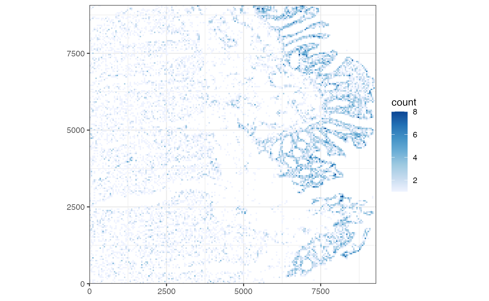
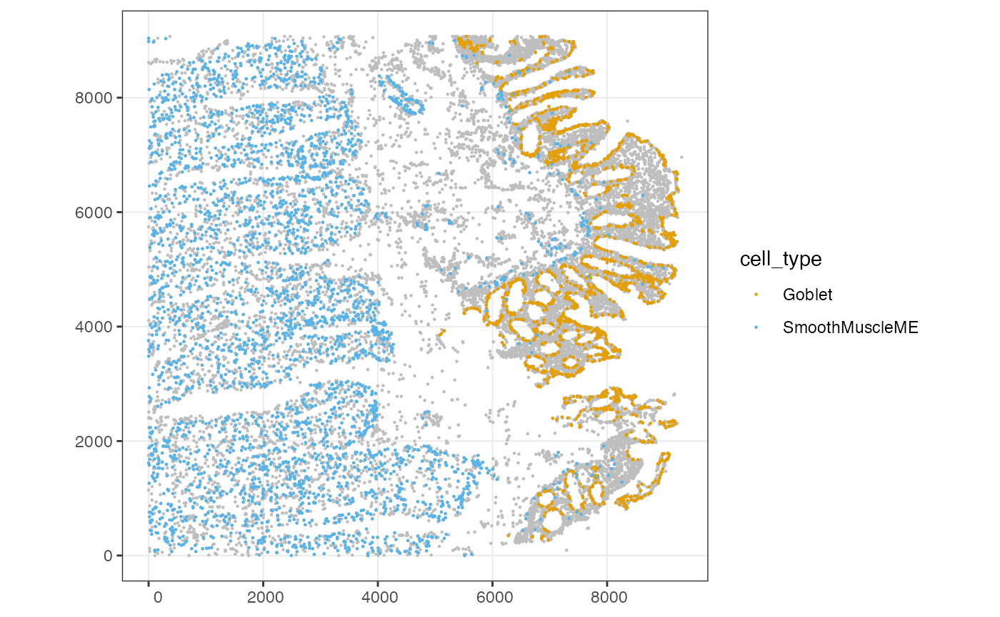
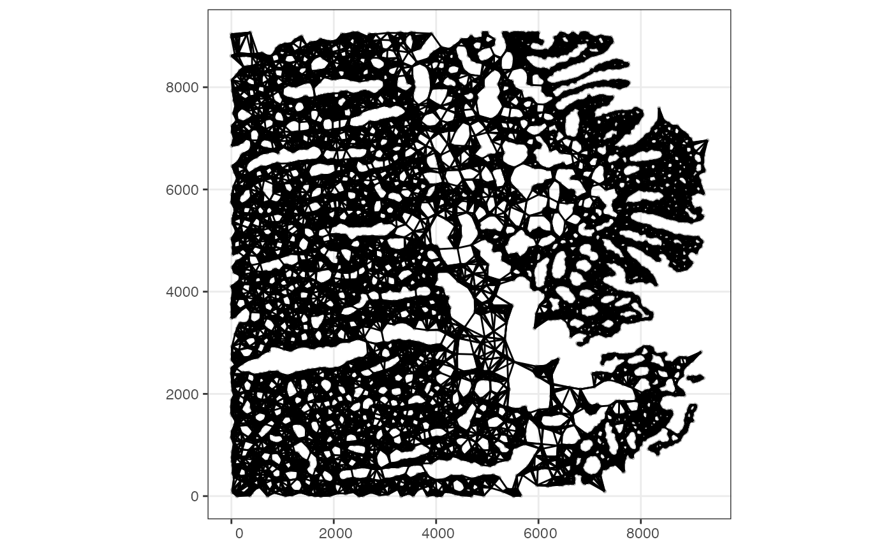
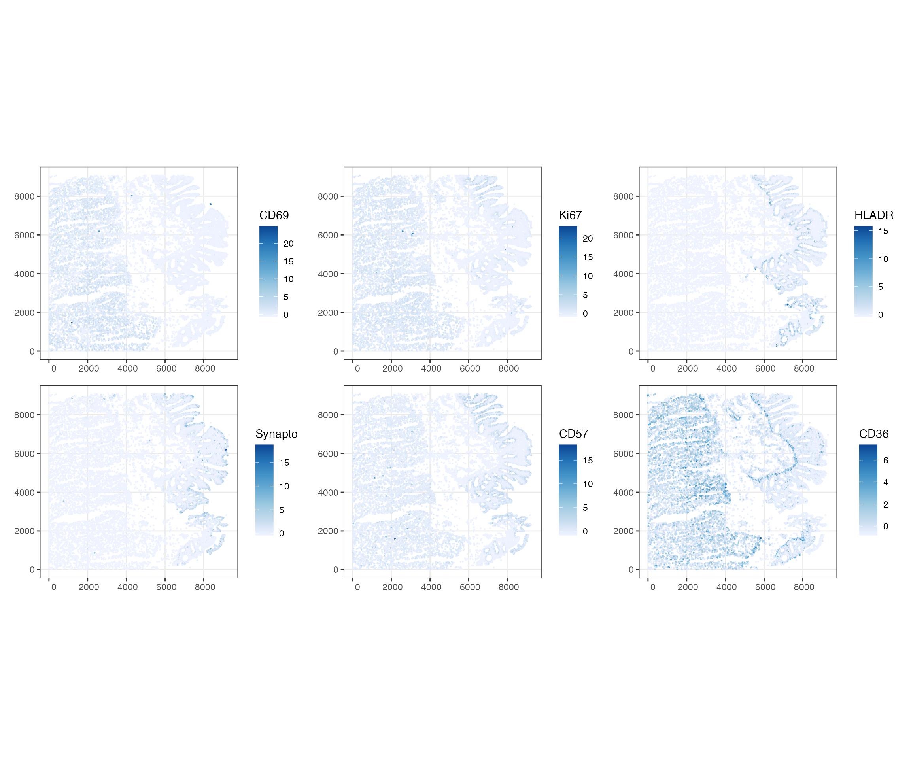
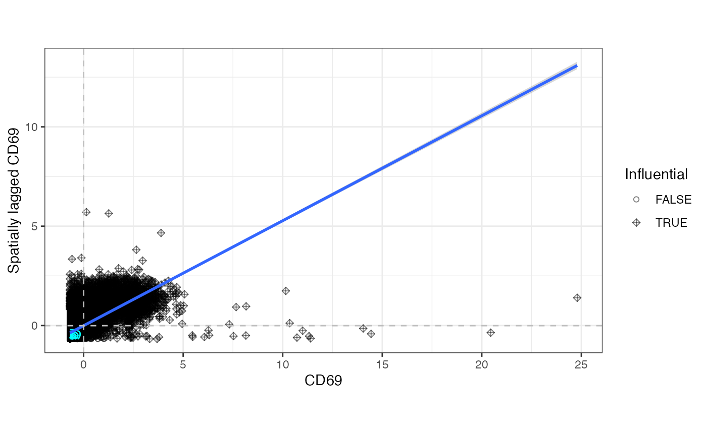

CODEX exploratory data analysis
Kayla Jackson
2023-06-21
Source:vignettes/vig8_codex.Rmd
vig8_codex.RmdIntroduction
library(Voyager)
#> The legacy packages maptools, rgdal, and rgeos, underpinning this package
#> will retire shortly. Please refer to R-spatial evolution reports on
#> https://r-spatial.org/r/2023/05/15/evolution4.html for details.
#> This package is now running under evolution status 0
library(SingleCellExperiment)
#> Loading required package: SummarizedExperiment
#> Loading required package: MatrixGenerics
#> Loading required package: matrixStats
#>
#> Attaching package: 'MatrixGenerics'
#> The following objects are masked from 'package:matrixStats':
#>
#> colAlls, colAnyNAs, colAnys, colAvgsPerRowSet, colCollapse,
#> colCounts, colCummaxs, colCummins, colCumprods, colCumsums,
#> colDiffs, colIQRDiffs, colIQRs, colLogSumExps, colMadDiffs,
#> colMads, colMaxs, colMeans2, colMedians, colMins, colOrderStats,
#> colProds, colQuantiles, colRanges, colRanks, colSdDiffs, colSds,
#> colSums2, colTabulates, colVarDiffs, colVars, colWeightedMads,
#> colWeightedMeans, colWeightedMedians, colWeightedSds,
#> colWeightedVars, rowAlls, rowAnyNAs, rowAnys, rowAvgsPerColSet,
#> rowCollapse, rowCounts, rowCummaxs, rowCummins, rowCumprods,
#> rowCumsums, rowDiffs, rowIQRDiffs, rowIQRs, rowLogSumExps,
#> rowMadDiffs, rowMads, rowMaxs, rowMeans2, rowMedians, rowMins,
#> rowOrderStats, rowProds, rowQuantiles, rowRanges, rowRanks,
#> rowSdDiffs, rowSds, rowSums2, rowTabulates, rowVarDiffs, rowVars,
#> rowWeightedMads, rowWeightedMeans, rowWeightedMedians,
#> rowWeightedSds, rowWeightedVars
#> Loading required package: GenomicRanges
#> Loading required package: stats4
#> Loading required package: BiocGenerics
#>
#> Attaching package: 'BiocGenerics'
#> The following objects are masked from 'package:stats':
#>
#> IQR, mad, sd, var, xtabs
#> The following objects are masked from 'package:base':
#>
#> anyDuplicated, aperm, append, as.data.frame, basename, cbind,
#> colnames, dirname, do.call, duplicated, eval, evalq, Filter, Find,
#> get, grep, grepl, intersect, is.unsorted, lapply, Map, mapply,
#> match, mget, order, paste, pmax, pmax.int, pmin, pmin.int,
#> Position, rank, rbind, Reduce, rownames, sapply, setdiff, sort,
#> table, tapply, union, unique, unsplit, which.max, which.min
#> Loading required package: S4Vectors
#>
#> Attaching package: 'S4Vectors'
#> The following object is masked from 'package:utils':
#>
#> findMatches
#> The following objects are masked from 'package:base':
#>
#> expand.grid, I, unname
#> Loading required package: IRanges
#> Loading required package: GenomeInfoDb
#> Loading required package: Biobase
#> Welcome to Bioconductor
#>
#> Vignettes contain introductory material; view with
#> 'browseVignettes()'. To cite Bioconductor, see
#> 'citation("Biobase")', and for packages 'citation("pkgname")'.
#>
#> Attaching package: 'Biobase'
#> The following object is masked from 'package:MatrixGenerics':
#>
#> rowMedians
#> The following objects are masked from 'package:matrixStats':
#>
#> anyMissing, rowMedians
library(SpatialExperiment)
library(SpatialFeatureExperiment)
library(batchelor)
library(scater)
#> Loading required package: scuttle
#> Loading required package: ggplot2
#>
#> Attaching package: 'ggplot2'
#> The following object is masked from 'package:SpatialFeatureExperiment':
#>
#> unit
library(scran)
library(bluster)
library(glue)
#>
#> Attaching package: 'glue'
#> The following object is masked from 'package:SummarizedExperiment':
#>
#> trim
#> The following object is masked from 'package:GenomicRanges':
#>
#> trim
#> The following object is masked from 'package:IRanges':
#>
#> trim
library(purrr)
#>
#> Attaching package: 'purrr'
#> The following object is masked from 'package:SpatialFeatureExperiment':
#>
#> transpose
#> The following object is masked from 'package:GenomicRanges':
#>
#> reduce
#> The following object is masked from 'package:IRanges':
#>
#> reduce
library(tidyr)
#>
#> Attaching package: 'tidyr'
#> The following object is masked from 'package:S4Vectors':
#>
#> expand
library(dplyr)
#>
#> Attaching package: 'dplyr'
#> The following object is masked from 'package:Biobase':
#>
#> combine
#> The following objects are masked from 'package:GenomicRanges':
#>
#> intersect, setdiff, union
#> The following object is masked from 'package:GenomeInfoDb':
#>
#> intersect
#> The following objects are masked from 'package:IRanges':
#>
#> collapse, desc, intersect, setdiff, slice, union
#> The following objects are masked from 'package:S4Vectors':
#>
#> first, intersect, rename, setdiff, setequal, union
#> The following objects are masked from 'package:BiocGenerics':
#>
#> combine, intersect, setdiff, union
#> The following object is masked from 'package:matrixStats':
#>
#> count
#> The following objects are masked from 'package:stats':
#>
#> filter, lag
#> The following objects are masked from 'package:base':
#>
#> intersect, setdiff, setequal, union
library(ggplot2)
library(gghighlight)
library(patchwork)
library(spdep)
#> Loading required package: spData
#> To access larger datasets in this package, install the spDataLarge
#> package with: `install.packages('spDataLarge',
#> repos='https://nowosad.github.io/drat/', type='source')`
#> Loading required package: sf
#> Linking to GEOS 3.11.0, GDAL 3.5.3, PROJ 9.1.0; sf_use_s2() is TRUE
library(spatialDE)
library(BiocParallel)
theme_set(theme_bw())Dataset
The dataset used in this vignette is from the paper Strategies for Accurate Cell Type Identification in CODEX Multiplexed Imaging Data(Hickey, et.al 2021). The data were collected as part of the HuBMap consortium which seeks to characterize healthy human tissues and make data broadly available. More specifically, this dataset characterizes 4 regions of the large intestine (colon) from a single donor. This vignette will focus on data from the sigmoid colon.
The intestinal sections were interrogated using the multiplexed imaging method CO-Detection by indEXing (CODEX). CODEX involves cyclical staining of a tissue with DNA-barcoded antibodies. At each round of experimentation, fluoresently labeled probes hybridize to the tissue bound DNA-conjugated antibodies are subsequently imaged and the stripped from the tissue. At present, the technology quantifies up to 60 markers in a single experiment. Raw images generated from this process are subjected to image stitching, drift compensation, deconvolution, and cycle concatenation using publicly avaialable software. The result of this pre-processing is a matrix that contains the location of individual cells and the quantified markers for each cell. Cell types were assigned as described in the manuscript linked above. Briefly, the authors used a hand-gating strategy to define cell types and create a standard to compare the effect of normalization methods on clustering and cell annotation.
The raw intensity data are available for download from HuBMAP with
identifier HBM575.THQMM.284
and the cell type annotations are provided as supplementary data in the
manuscript. The data relevant to this vignette have been converted to a
SFE object and are available to download here
from Box.
These data will be submitted to the SFEData package on
Bioconductor and will be available there in a future release.
We will begin by downloading the data and loading it in to R.
download.file("https://caltech.box.com/public/static/zfr8l20450n2z28lnp0ugdj471ph9eyx",'./codex.Rds', mode='wb', method = 'wget', quiet = TRUE)
sfe <- readRDS("./codex.Rds")
sfe
#> class: SpatialFeatureExperiment
#> dim: 47 19724
#> metadata(0):
#> assays(1): protein
#> rownames(47): MUC2 SOX9 ... CD49a CD163
#> rowData names(0):
#> colnames(19724): 1 2 ... 182 184
#> colData names(9): cell_id cell_type ... fn sample_id
#> reducedDimNames(0):
#> mainExpName: NULL
#> altExpNames(0):
#> spatialCoords names(2) : X Y
#> imgData names(0):
#>
#> unit: full_res_image_pixels
#> Geometries:
#> colGeometries: centroids (POINT)
#>
#> Graphs:
#> sample01:The rows in the count matrix correspond to the 47 barcoded genes measured by CODEX. Additionally, the authors provide some metadata for the cells, including the cell type.
It turns out the column names are not unique which will cause errors in downstream analysis. We will update the column names below
Exploratory Data Analysis
celldensity <- plotCellBin2D(sfe)
celldensity We can see from the figure above that the colonic epithelium is enriched with cells while the loose connective tissue and muscle layers beneath the epithelial layer are more sparsely populated. This is in line with known colon histology. The epithelium is enriched with goblet cells and has invaginations that project inwards towards the connective tissue. Smooth muscle cells are also prominent in the colon, where bands of muscle contract to move colonic contents towards the rectum.
We can visualize these cell types in space using the
plotSpatialFeature() function. We will highlight Goblet and
smooth muscle cells to display their relative distribution in the
tissue. Since CODEX image processing relies on segmentation, each dot in
the plot represents a single cell. Here, each cell is represented by its
centroid, but can also be visualized as cell polygons in cases where the
segmentation mask is available.
spatial <- plotSpatialFeature(sfe, features='cell_type', colGeometryName = "centroids") +
gghighlight(cell_type %in% c("Goblet", "SmoothMuscleME"))
#> Warning: Tried to calculate with group_by(), but the calculation failed.
#> Falling back to ungrouped filter operation...
spatial The goblet cells clearly define the epithelial border of the tissue and the thick bands of smooth muscle cells are prominent below the mucosa.
Next, we will compute some gene level metrics for each of the 47 barcoded genes. In contrast to RNA-based methods, the fields in the matrix represent intensities rather than counts.
rowData(sfe)$mean <- rowMeans(assay(sfe))
rowData(sfe)$var <- rowVars(assay(sfe))
data.frame(rowData(sfe)) |>
ggplot(aes(mean, var)) +
geom_point() There appears to be a sigmoid relationship between the mean and variance
of the protein expression. The pattern is reminiscent of what might be
expected if the intensity values were derived from a Gamma distribution,
the continuous analog of the Negative Binomial distribution that is
typically used to describe count data from scRNA-seq experiments. This
may have implications for how CODEX data is variance stabilized in the
future.
There appears to be a sigmoid relationship between the mean and variance
of the protein expression. The pattern is reminiscent of what might be
expected if the intensity values were derived from a Gamma distribution,
the continuous analog of the Negative Binomial distribution that is
typically used to describe count data from scRNA-seq experiments. This
may have implications for how CODEX data is variance stabilized in the
future.
CODEX data is subject to noise from several sources including
segmentation artifacts, nonspecific staining, and imperfect tissue
processing. These are factors that can limit accurate quantification of
signal intensity and impede accurate cell annotation. The authors of the
dataset tested the effects of several normalization methods on cell type
annotation and clustering and found that Z-score normalization of each
marker resulted in accurate identification of both rare and common cell
types. In the cell below, we demonstrate how to accomplish this using
standard matrix operations. The normalized count matrix is typically
stored in the logcounts slot for scRNA-seq data, but we
will instead store the normalized matrix in a slot called
normalizedIntensity.
Spatial EDA
Neighbor definition is a critical step in computation of metrics of
spatial dependency like Moran’s I and Geary’s C. The definition of
neighbors is complex, even when cell polygons are available. In the
latter case, the poly2nb method might be appropriate to
assign two cells as neighbors if they physically touch each other or
share a border. This may not be tenable in cases where cells are sparse
or cells are represented by their centroids, as in this dataset.
We will compute the spatial neighborhood graph using the
knearestneigh function as it is implemented in
spdep. In brief, Euclidean distances are computed between
each pair of cells and the k nearest cells are considered
neighbors. In the following code cell, we will consdier
k=10 for speed purposes, but this may not be ideal in
general.
The weights of the neighborhood matrix are inverse-distance weighted,
such that the the weight of regions listed as neighbors increases as the
distance between pairs of points decreases. Setting
style = "W" ensures that the weights are row
standardized.
colGraph(sfe, "knn10") <- findSpatialNeighbors(
sfe, method = "knearneigh", dist_type = "idw",
k = 10, style = "W")
#> Warning in (function (to_check, X, clust_centers, clust_info, dtype, nn, :
#> detected tied distances to neighbors, see ?'BiocNeighbors-ties'The plotColGraph() function plots the graph in space
along with its corresponding colGeometry, but since there
are so many cells in this dataset, plotting the neighborhood graph may
not be as useful as many connections will be obscure by overlapping
lines. In any case, we will demonstrate use of the function below.
plotColGraph(sfe, colGraphName = "knn10", colGeometryName = 'centroids') Next, we will explore univariate metrics for global spatial autocorrelation. Since few genes are quantified in this study, we will compute the metrics for all genes. For larger datasets, it may be useful to restrict analysis to the most variable genes.
We use the runUnivariate() function to compute the
spatial autocorrelation metrics and save the results in the SFE
object.
sfe <- runUnivariate(
sfe, type = "moran.mc", features = rownames(sfe),
exprs_values = "normalizedIntensity", colGraphName = "knn10", nsim = 100,
BPPARAM = MulticoreParam(2))
sfe <- runUnivariate(
sfe, type = "moran.plot", features = rownames(sfe),
exprs_values = "normalizedIntensity", colGraphName = "knn10")The results of these computations are accessible in the
rowData attribute of the SFE object.
colnames(rowData(sfe))
#> [1] "mean" "var"
#> [3] "moran.mc_statistic_sample01" "moran.mc_parameter_sample01"
#> [5] "moran.mc_p.value_sample01" "moran.mc_alternative_sample01"
#> [7] "moran.mc_method_sample01" "moran.mc_res_sample01"Next, we plot the results of the genes with the highest Moran’s I statistic.
top_moran <- data.frame(rowData(sfe)) |>
arrange(desc(moran.mc_statistic_sample01)) |>
head(6) |>
rownames()
moran <- plotMoranMC(sfe, features = top_moran, facet_by = 'features')
moran The vertical line in each plot represents the observed Moran’s I while
the density represents the Moran’s I statistic for each of the random
permutations of the data. Each of these plots suggests that the Moran’s
I statistic is significant. We can plot the normalized intensity for
these genes in space.
The vertical line in each plot represents the observed Moran’s I while
the density represents the Moran’s I statistic for each of the random
permutations of the data. Each of these plots suggests that the Moran’s
I statistic is significant. We can plot the normalized intensity for
these genes in space.
plotSpatialFeature(
sfe, features=top_moran, colGeometryName = "centroids",
exprs_values = "normalizedIntensity", scattermore = TRUE, pointsize = 1) While most of these genes appear to have some spatial distribution, it also seems that it may overlap with cell type. The cells that appear to express the genes of interest seem to be spatially restricted to known boundaries in the tissue.
The moranPlot() function plots spatial data against its
spatially lagged values and enables users to assess how similar observed
values are to its neighbors. When the variable is centered, the plot is
divided into four quadrants defined by the horizontal line y = 0 and the
vertical line x = 0. Points in the upper right (or high-high) and lower
left (or low-low) quadrants indicate positive spatial association, and
points in the lower right (or high-low) and upper left (or low-high)
quadrants include observations that exhibit negative spatial
association.
moranPlot(sfe, top_moran[1])
Differential Expression
While Moran’s I and other global spatial autocorrelation metrics provide insight to the spatial patterns of gene expression, it is necessarily limited by the structure imposed by the spatial weights matrix. A complimentary task might be to identify spatially variable (SV) genes. One such method to do this is described in SpatialDE: identification of spatially variable genes. The method described in the manuscript relies on Gaussian process regression and decomposes variability in expression into spatial and non-spatial components. In contrast to Moran’s I, the covariance between each pair of cells is modeled as a function of the distance between them. Notably, it does not require an explicit specification of hte neighborhood graph, but rather the a parameter controls the decay in covariance as distance increases.
The spatialDE package is implemented in R and requires a
normalized matrix as input. The spatialDE() function from
the package performs normalization steps before running the algorithm.
Because the data has already been normalized, we will use the
run() function directly to run spatialDE. We will first
have to convert the centroid coordinates to a data frame as required by
the function.
# Store coordinates in a data frame object
coords <- centroids(sfe)$geometry |>
purrr::map_dfr(\(x) c(x = x[1], y = x[2]))
# de_res <- spatialDE::run(assay(sfe,"normalizedIntensity"), coords, verbose=TRUE)We can plot the normalized expression of the top 5 genes in space.
# top_genes <- de_res |>
# arrange(pval) |>
# slice_head(n=6) |>
# pull(g)
#
# plotSpatialFeature(sfe, top_genes, colGeometryName="centroids",
# exprs_values = "normalizedIntensity")Perhaps unsurprisingly, the expression of the top DE genes seems to highlight the spatial distribution of known cell types in the tissue rather than identify spatially restricted gene expression. This is related to the experimental design where the targeted genes were chosen to differentiate cell types. Perhaps in genome-wide technologies, the potential for discovery of neew gene expression patterns is more plausible. There is an open question as to whether these results offer new information compared to what is inferred by typical DE expression methods.
These analyses represent a minority of the types of inferences that can be made from protein expression data. It would be interested to investigate how the protein expression results compare or inform data from spatail scRNA-sequencing experiments. Already, there is work being done to obtain multimodal spatial measurements on the same sample. Importantly however, considerations should be made on the types of biases each individual technology adds to the measurements. These are active areas of research that are ripe for future exploration.
Session Info
sessionInfo()
#> R version 4.3.1 (2023-06-16)
#> Platform: x86_64-apple-darwin20 (64-bit)
#> Running under: macOS Monterey 12.6.6
#>
#> Matrix products: default
#> BLAS: /Library/Frameworks/R.framework/Versions/4.3-x86_64/Resources/lib/libRblas.0.dylib
#> LAPACK: /Library/Frameworks/R.framework/Versions/4.3-x86_64/Resources/lib/libRlapack.dylib; LAPACK version 3.11.0
#>
#> locale:
#> [1] en_US.UTF-8/en_US.UTF-8/en_US.UTF-8/C/en_US.UTF-8/en_US.UTF-8
#>
#> time zone: UTC
#> tzcode source: internal
#>
#> attached base packages:
#> [1] stats4 stats graphics grDevices utils datasets methods
#> [8] base
#>
#> other attached packages:
#> [1] BiocParallel_1.34.2 spatialDE_1.6.0
#> [3] spdep_1.2-8 sf_1.0-13
#> [5] spData_2.2.2 patchwork_1.1.2
#> [7] gghighlight_0.4.0 dplyr_1.1.2
#> [9] tidyr_1.3.0 purrr_1.0.1
#> [11] glue_1.6.2 bluster_1.10.0
#> [13] scran_1.28.1 scater_1.28.0
#> [15] ggplot2_3.4.2 scuttle_1.10.1
#> [17] batchelor_1.16.0 SpatialFeatureExperiment_1.2.1
#> [19] SpatialExperiment_1.10.0 SingleCellExperiment_1.22.0
#> [21] SummarizedExperiment_1.30.2 Biobase_2.60.0
#> [23] GenomicRanges_1.52.0 GenomeInfoDb_1.36.0
#> [25] IRanges_2.34.0 S4Vectors_0.38.1
#> [27] BiocGenerics_0.46.0 MatrixGenerics_1.12.2
#> [29] matrixStats_1.0.0 Voyager_1.2.3
#>
#> loaded via a namespace (and not attached):
#> [1] RColorBrewer_1.1-3 jsonlite_1.8.5
#> [3] wk_0.7.3 magrittr_2.0.3
#> [5] ggbeeswarm_0.7.2 magick_2.7.4
#> [7] farver_2.1.1 rmarkdown_2.22
#> [9] fs_1.6.2 zlibbioc_1.46.0
#> [11] ragg_1.2.5 vctrs_0.6.3
#> [13] memoise_2.0.1 DelayedMatrixStats_1.22.1
#> [15] RCurl_1.98-1.12 terra_1.7-37
#> [17] htmltools_0.5.5 S4Arrays_1.0.4
#> [19] BiocNeighbors_1.18.0 Rhdf5lib_1.22.0
#> [21] s2_1.1.4 rhdf5_2.44.0
#> [23] sass_0.4.6 KernSmooth_2.23-21
#> [25] bslib_0.5.0 basilisk_1.12.0
#> [27] desc_1.4.2 cachem_1.0.8
#> [29] ResidualMatrix_1.10.0 igraph_1.5.0
#> [31] lifecycle_1.0.3 pkgconfig_2.0.3
#> [33] rsvd_1.0.5 Matrix_1.5-4.1
#> [35] R6_2.5.1 fastmap_1.1.1
#> [37] GenomeInfoDbData_1.2.10 digest_0.6.31
#> [39] colorspace_2.1-0 ggnewscale_0.4.9
#> [41] rprojroot_2.0.3 dqrng_0.3.0
#> [43] RSpectra_0.16-1 irlba_2.3.5.1
#> [45] textshaping_0.3.6 beachmat_2.16.0
#> [47] labeling_0.4.2 filelock_1.0.2
#> [49] fansi_1.0.4 mgcv_1.8-42
#> [51] compiler_4.3.1 proxy_0.4-27
#> [53] withr_2.5.0 backports_1.4.1
#> [55] viridis_0.6.3 DBI_1.1.3
#> [57] highr_0.10 HDF5Array_1.28.1
#> [59] R.utils_2.12.2 MASS_7.3-60
#> [61] DelayedArray_0.26.3 rjson_0.2.21
#> [63] classInt_0.4-9 tools_4.3.1
#> [65] units_0.8-2 vipor_0.4.5
#> [67] beeswarm_0.4.0 R.oo_1.25.0
#> [69] nlme_3.1-162 rhdf5filters_1.12.1
#> [71] grid_4.3.1 checkmate_2.2.0
#> [73] cluster_2.1.4 generics_0.1.3
#> [75] isoband_0.2.7 gtable_0.3.3
#> [77] R.methodsS3_1.8.2 class_7.3-22
#> [79] metapod_1.8.0 BiocSingular_1.16.0
#> [81] ScaledMatrix_1.8.1 sp_1.6-1
#> [83] utf8_1.2.3 XVector_0.40.0
#> [85] ggrepel_0.9.3 pillar_1.9.0
#> [87] stringr_1.5.0 limma_3.56.2
#> [89] splines_4.3.1 lattice_0.21-8
#> [91] deldir_1.0-9 tidyselect_1.2.0
#> [93] locfit_1.5-9.8 knitr_1.43
#> [95] gridExtra_2.3 edgeR_3.42.4
#> [97] scattermore_1.2 xfun_0.39
#> [99] statmod_1.5.0 DropletUtils_1.20.0
#> [101] stringi_1.7.12 yaml_2.3.7
#> [103] boot_1.3-28.1 evaluate_0.21
#> [105] codetools_0.2-19 tibble_3.2.1
#> [107] cli_3.6.1 reticulate_1.30
#> [109] systemfonts_1.0.4 munsell_0.5.0
#> [111] jquerylib_0.1.4 Rcpp_1.0.10
#> [113] dir.expiry_1.8.0 png_0.1-8
#> [115] parallel_4.3.1 pkgdown_2.0.7
#> [117] basilisk.utils_1.12.1 sparseMatrixStats_1.12.1
#> [119] bitops_1.0-7 viridisLite_0.4.2
#> [121] scales_1.2.1 e1071_1.7-13
#> [123] crayon_1.5.2 scico_1.4.0
#> [125] rlang_1.1.1